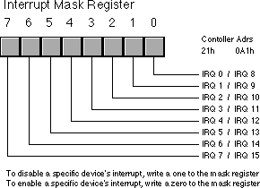

|
Table of Content | Chapter Seventeen
(Part 4) |
|
Table of Content | Chapter Seventeen
(Part 4) |
Hardware interrupts are the form most engineers (as opposed to PC programmers) associate with the term interrupt. We will adopt this same strategy henceforth and will use the non-modified term "interrupt" to mean a hardware interrupt.
On the PC, interrupts come from many different sources. The primary sources of interrupts, however, are the PCs timer chip, keyboard, serial ports, parallel ports, disk drives, CMOS real-time clock, mouse, sound cards, and other peripheral devices. These devices connect to an Intel 8259A programmable interrupt controller (PIC) that prioritizes the interrupts and interfaces with the 80x86 CPU. The 8259A chip adds considerable complexity to the software that processes interrupts, so it makes perfect sense to discuss the PIC first, before trying to describe how the interrupt service routines have to deal with it. Afterwards, this section will briefly describe each device and the conditions under which it interrupts the CPU. This text will fully describe many of these devices in later chapters, so this chapter will not go into a lot of detail except when discussing the timer interrupt.
17.4.1 The 8259A Programmable Interrupt Controller (PIC)
The 8259A (8259[6] or PIC, hereafter) programmable interrupt controller chip accepts interrupts from up to eight different devices. If any one of the devices requests service, the 8259 will toggle an interrupt output line (connected to the CPU) and pass a programmable interrupt vector to the CPU. You can cascade the device to support up to 64 devices by connecting nine 8259s together: eight of the devices with eight inputs each whose outputs become the eight inputs of the ninth device. A typical PC uses two of these devices to provide 15 interrupt inputs (seven on the master PIC with the eight input coming from the slave PIC to process its eight inputs)[7]. The sections following this one will describe the devices connected to each of those inputs, for now we will concentrate on what the 8259 does with those inputs. Nevertheless, for the sake of discussion, the following table lists the interrupt sources on the PC:
| Input on 8259 | 80x86 INT | Device |
|---|---|---|
| IRQ 0 | 8 | Timer chip |
| IRQ 1 | 9 | Keyboard |
| IRQ 2 | 0Ah | Cascade for controller 2 (IRQ 8-15) |
| IRQ 3 | 0Bh | Serial port 2 |
| IRQ 4 | 0Ch | Serial port 1 |
| IRQ 5 | 0Dh | Parallel port 2 in AT, reserved in PS/2 systems |
| IRQ 6 | 0Eh | Diskette drive |
| IRQ 7 | 0Fh | Parallel port 1 |
| IRQ 8/0 | 70h | Real-time clock |
| IRQ 9/1 | 71h | CGA vertical retrace (and other IRQ 2 devices) |
| IRQ 10/2 | 72h | Reserved |
| IRQ 11/3 | 73h | Reserved |
| IRQ 12/4 | 74h | Reserved in AT, auxiliary device on PS/2 systems |
| IRQ 13/5 | 75h | FPU interrupt |
| IRQ 14/6 | 76h | Hard disk controller |
| IRQ 15/7 | 77h | Reserved |
The 8259 PIC is a very complex chip to program. Fortunately, all of the hard stuff has already been done for you by the BIOS when the system boots. We will not discuss how to initialize the 8259 in this text because that information is only useful to those writing operating systems like Linux, Windows, or OS/2. If you want your interrupt service routines to run correctly under DOS or any other OS, you must not reinitialize the PIC.
The PICs interface to the system through four I/O locations: ports 20h/0A0h and 21h/0A1h. The first address in each pair is the address of the master PIC (IRQ 0-7), the second address in each pair corresponds to the slave PIC (IRQ 8-15). Port 20h/0A0h is a read/write location to which you write PIC commands and read PIC status, we will refer to this as the command register or the status register. The command register is write only, the status register is read only. They just happen to share the same I/O location. The read/write lines on the PIC determine which register the CPU accesses. Port 21h/0A1h is a read/write location that contains the interrupt mask register, we will refer to this as the mask register. Choose the appropriate address depending upon which interrupt controller you want to use.
The interrupt mask register is an eight bit register that
lets you individually enable and disable interrupts from devices on the system. This is
similar to the actions of the cli and sti instructions, but on a
device by device basis. Writing a zero to the corresponding bit enables that device's
interrupts. Writing a one disables interrupts from the affected device. Note that this is
non-intuitive. The figure below provides the layout of the interrupt mask register.

When changing bits in the mask register, it is important
that you not simply load al with a value and output it directly to the mask
register port. Instead, you should read the mask register and then logically or in
or and out the bits you want to change; finally, you can write the output
back to the mask register. The following code sequence enables COM1: interrupts without
affecting any others:
in al, 21h ;Read existing bits.
and al, 0efh ;Turn on IRQ 4 (COM1).
out 21h, al ;Write result back to PIC.
The command register provides lots of options, but there are only three commands you would want to execute on this chip that are compatible with the BIOS' initialization of the 8259: sending an end of interrupt command and sending one of two read status register commands.
One a specific interrupt occurs, the 8259 masks all further interrupts from that device until is receives an end of interrupt signal from the interrupt service routine. On PCs running DOS, you accomplish this by writing the value 20h to the command register. The following code does this:
mov al, 20h
out 20h, al ;Port 0A0h if IRQ 8-15.
You must send exactly one end of interrupt command to the PIC for each interrupt you service. If you do not send the end of interrupt command, the PIC will not honor any more interrupts from that device; if you send two or more end of interrupt commands, there is the possibility that you will accidentally acknowledge a new interrupt that may be pending and you will lose that interrupt.
For some interrupt service routines you write, your ISR will not be the only ISR that an interrupt invokes. For example, the PC's BIOS provides an ISR for the timer interrupt that maintains the time of day. If you patch into the timer interrupt, you will need to call the PC BIOS' timer ISR so the system can properly maintain the time of day and handle other timing related chores (see "Chaining Interrupt Service Routines"). However, the BIOS' timer ISR outputs the end of interrupt command. Therefore, you should not output the end of interrupt command yourself, otherwise the BIOS will output a second end of interrupt command and you may lose an interrupt in the process.
The other two commands you can send the 8259 let you select whether to read the in-service register (ISR) or the interrupt request register (IRR). The in-service register contains set bits for each active ISR (because the 8259 allows prioritized interrupts, it is quite possible that one ISR has been interrupted by a higher priority ISR). The interrupt request register contains set bits in corresponding positions for interrupts that have not yet been serviced (probably because they are a lower priority interrupt than the interrupt currently being serviced by the system). To read the in-service register, you would execute the following statements:
; Read the in-service register in PIC #1 (at I/O address 20h)
mov al, 0bh
out 20h, al
in al, 20h
To read the interrupt request register, you would use the following code:
; Read the interrupt request register in PIC #1 (at I/O address 20h)
mov al, 0ah
out 20h, al
in al, 20h
Writing any other values to the command port may cause your system to malfunction.
17.4.2 The Timer Interrupt (INT 8)
The PC's motherboard contains an 8254 compatible timer chip. This chip contains three timer channels, one of which generates interrupts every 55 msec (approximately). This is about once every 1/18.2 seconds. You will often hear this interrupt referred to as the "eighteenth second clock." We will simply call it the timer interrupt.
The timer interrupt vector is probably the most commonly
patched interrupt in the system. It turns out there are two timer interrupt vectors in the
system. Int 8 is the hardware vector associated with the timer interrupt (since it comes
in on IRQ 0 on the PIC). Generally, you should not patch this interrupt if you want to
write a timer ISR. Instead, you should patch the second timer interrupt, interrupt 1ch.
The BIOS' timer interrupt handler (int 8) executes an int 1ch instruction
before it returns. This gives a user patched routine access to the timer interrupt. Unless
you are willing to duplicate the BIOS and DOS timer code, you should never completely
replace the existing timer ISR with one of your own, you should always ensure that the
BIOS and DOS ISRs execute in addition to your ISR. Patching into the int 1ch vector is the
easiest way to do this.
Even replacing the int 1ch vector with a pointer to your ISR is very dangerous. The timer interrupt service routine is the one most commonly patched by various resident programs. By simply writing the address of your ISR into the timer interrupt vector, you may disable such resident programs and cause your system to malfunction. To solve this problem, you need to create an interrupt chain. For more details, see the section "Chaining Interrupt Service Routines".
By default the timer interrupt is always enabled on the interrupt controller chip. Indeed, disabling this interrupt may cause your system to crash or otherwise malfunction. At the very least, you system will not maintain the correct time if you disable the timer interrupt.
17.4.3 The Keyboard Interrupt (INT 9)
The keyboard microcontroller on the PC's motherboard generates two interrupts on each keystroke - one when you press a key and one when you release it. This is on IRQ 1 on the master PIC. The BIOS responds to this interrupt by reading the keyboard's scan code, converting this to an ASCII character, and storing the scan and ASCII codes away in the system type ahead buffer.
By default, this interrupt is always enabled. If you disable this interrupt, the system will not be able to respond to any keystrokes, including ctrl-alt-del. Therefore, your programs should always reenable this interrupt if they ever disable it.
17.4.4 The Serial Port Interrupts (INT 0Bh and INT 0Ch)
The PC uses two interrupts, IRQ 3 and IRQ 4, to support interrupt driven serial communications. The 8250 (or compatible) serial communications controller chip (SCC) generates an interrupt in one of four situations: a character arriving over the serial line, the SCC finishes the transmission of a character and is requesting another, an error occurs, or a status change occurs. The SCC activates the same interrupt line (IRQ 3 or 4) for all four interrupt sources. The interrupt service routine is responsible for determining the exact nature of the interrupt by interrogating the SCC.
By default, the system disables IRQ 3 and IRQ 4. If you install a serial ISR, you will need to clear the interrupt mask bit in the 8259 PIC before it will respond to interrupts from the SCC. Furthermore, the SCC design includes its own interrupt mask. You will need to enable the interrupt masks on the SCC chip as well. For more information on the SCC, see the appropriate chapter.
17.4.5 The Parallel Port Interrupts (INT 0Dh and INT 0Fh)
The parallel port interrupts are an enigma. IBM designed the original system to allow two parallel port interrupts and then promptly designed a printer interface card that didn't support the use of interrupts. As a result, almost no DOS based software today uses the parallel port interrupts (IRQ 5 and IRQ 7). Indeed, on the PS/2 systems IBM reserved IRQ5 which they formerly used for LPT2:.
However, these interrupts have not gone to waste. Many devices which IBM's engineers couldn't even conceive when designing the first PC have made good use of these interrupts. Examples include SCSI cards and sound cards. Many devices today include "interrupt jumpers" that let you select IRQ 5 or IRQ 7 when installing the device.
Since IRQ 5 and IRQ 7 find such little use as parallel port interrupts, we will effectively ignore the "parallel port interrupts" in this text.
17.4.6 The Diskette and Hard Drive Interrupts (INT 0Eh and INT 76h)
The floppy and hard disk drives generate interrupts at the completion of a disk operation. This is a very useful feature for multitasking systems like OS/2, Linux, or Windows. While the disk is reading or writing data, the CPU can go execute instructions for another process. When the disk finishes the read or write operation, it interrupts the CPU so it can resume the original task.
While managing the disk drives would be an interesting topic to cover in this text, this book is already long enough. Therefore, this text will avoid discussing the disk drive interrupts (IRQ 6 and IRQ 14) in the interest of saving some space. There are many texts that cover low level disk I/O in assembly language, see the bibliography for details.
By default, the floppy and hard disk interrupts are always enabled. You should not change this status if you intend to use the disk drives on your system.
17.4.7 The Real-Time Clock Interrupt (INT 70h)
PC/AT and later machines included a CMOS real-time clock. This device is capable of generating timer interrupts in multiples of 976 msec (let's call it 1 msec). By default, the real-time clock interrupt is disabled. You should only enable this interrupt if you have an int 70h ISR installed.
17.4.8 The FPU Interrupt (INT 75h)
The 80x87 FPU generates an interrupt whenever a floating point exception occurs. On CPUs with built-in FPUs (80486DX and better) there is a bit in one of the control register you can set to simulate a vectored interrupt. BIOS generally initializes such bits for compatibility with existing systems.
By default, BIOS disables the FPU interrupt. Most programs that use the FPU explicitly test the FPU's status register to determine if an error occurs. If you want to allow FPU interrupts, you must enable the interrupts on the 8259 and on the 80x87 FPU.
17.4.9 Nonmaskable Interrupts (INT 2)
The 80x86 chips actually provide two interrupt input pins.
The first is the maskable interrupt. This is the pin to which the 8259 PIC connects. This
interrupt is maskable because you can enable or disable it with the cli and sti
instructions. The nonmaskable interrupt, as its name implies, cannot be disabled under
software control. Generally, PCs use this interrupt to signal a memory parity error,
although certain systems use this interrupt for other purposes as well. Many older PC
systems connect the FPU to this interrupt.
This interrupt cannot be masked, so it is always enabled by default.
As mentioned in the section on the 8259 PIC, there are several interrupts reserved by IBM. Many systems use the reserved interrupts for the mouse or for other purposes. Since such interrupts are inherently system dependent, we will not describe them here.
[6] The original 8259 was designed for Intel's 8080 system. The 8259A provided support for the 80x86 and some other features. Since almost no one uses 8259 chips anymore, this text will use the generic term 8259.
[7] The original IBM PC and PC/XT machines only supported eight interrupts via one 8259 chip. IBM, and virtually all clone manufacturers, added the second PIC in PC/AT and later designs.
|
Table of Content | Chapter Seventeen
(Part 4) |
Chapter Seventeen: Interrupts, Traps
and Exeptions (Part 3)
29 SEP 1996